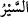
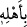
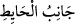
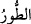
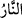

Rivâyete göre Mûsâ (a.s.), bu iki müddetin uzun olanını yâni on yılı tamamlayınca
Şuayb (a.s.) ağladı ve şöyle dedi: “Ey Mûsâ, benden nasıl ayrılacaksın. Ben zayıfladım
ve ihtiyarladım.” Mûsâ (a.s.) ona: Firavun’un memleketindeki annemden, teyzemden,
kardeşim Hârun’dan ve kız kardeşimden ayrılığım çok uzadı.” dedi. Bunun üzerine
Şuayb (a.s.) kalktı ve ellerini açarak şöyle duâ etti: “Ya Rabbi, İbrâhim Halil, İsmâil
Safiy, İshâk Zebîh (Kurban), Yâ’kub Kazîm (öfkesini yenen) ve Yusuf Sıddîk hak ve
hürmeti için kuvvetimi ve gücümü geri ver.” Mûsâ (a.s.) da onun bu duâsına “âmin”
dedi. Allah da onun gözünü ve kuvvetini geri verdi. Sonra Şuayb (a.s.) kızına bazı
tavsiyelerde bulundu.
Mûsâ (a.s.), Şuayb (a.s.)’dan izin alarak Mısır tarafına yürüdü. “__WORD__, yeryüzünde
yürümek, gitmek, demektir. Keşfü’l-esrâr’da kaydedildiğine göre karısı Safûriyya ve
oğlu da beraberinde idi. Mûsâ (a.s.)’ın bu oğlu yola çıkmadan önce dünyâya gelmişti.
Kâşifî der ki: Öğle namazında yola koyuldu. Habire gidiyordu, nihâyet akşam oldu.
Burada “__WORD__ kelimesinin başındaki “__WORD__” harfi fiilin anlamını geçişli kılmak (ta’diye)
içindir. Yâni “âilesiyle yola çıkınca”; âilesini de beraberinde götürünce demektir.
İbn Atâ der ki: Mûsâ (a.s.)’ın muhabbet süresi tamam olup, Allah’a kurbiyet ve
yakınlık günleri ve nübüvvet nurlarının zuhûru yaklaşınca; Allah’ın âlemdeki yaratma
ve yoktan var etmedeki eşsiz kudretinin izlerini ve eserlerini görsün ve müşâhede etsin
diye âilesi ile beraber gitti.
Keşfü’l-esrâr’da der ki: Mûsâ (a.s.) yolculuk esnâsında akşam olunca çölde bir çadır
kurup âilesini çadıra yerleştirdi. Vâdî soğuk ve karanlık idi. Birden yağmur ve kar
bastırdı. Mûsâ (a.s.)’ın koyunları -ki onları Şuayb (a.s.) vermişti- kar, rüzgâr ve tipiden
dağıldılar. Âilesi (ikinci çocuğuna) hâmile olduğu için Mûsâ (a.s.) onu da yanında
götürüyordu. Bu arada onun doğum sancısı tuttu. Mûsâ (a.s.) çakmağı taşa vurarak ateş
yakmak istedi fakat ateş çıkmayınca üzüldü. İşte bu esnada:
“Tûr” Dağı “tarafından bir ateş gördü.”
Duvarın yanı ve tarafını ifâde etmek için “__WORD__ denir. “__WORD__ kelimesi, belli bir
dağın ismidir. “__WORD__, duyularla görülüp hissedilen ateş demektir. Ayrıca mücerred
sıcaklık olan harârete ve cehennem ateşine de “nâr” denilir.
Bazıları demiştir ki: Mûsâ (a.s.) nûrlara delâlet eden bir ateş gördü. Çünkü o, bu
esnada aradığı şey ateş olduğu için, nûru ateş şeklinde gördü. Zira insân ünsiyet edeceği
bilinen şeylere meyleder. Özellikle de kış ayında ateşle ünsiyetten uzak kalınmaz. İşte
bir kış ayında, Mûsâ (a.s.)ın iradesine göre Hak, ateş görünümündeki nûrla tecellî
etmiştir. Bu, Allah Teâlâ’nın sünnetidir. Bilindiği gibi Cebrâil (a.s.), Peygamberimiz
(s.a)’in Dihye’yi sevdiğini bildiği için, daha çok onun şekil ve sûretinde gelmiştir.
Mûsâ (a.s.) “âilesine: Siz (burada)” beni “bekleyin; yerinizde durun ve ayrılmayın.
“Ben bir ateş gördüm, belki oradan size bir haber” yâni o ateşin başında olan
insanlardan “Mısır’a giden yol hangi taraftadır?” diye yolla ilgili bir haber getiririm -
zira onlar o sırada yolu kaybetmişlerdi- “yahut ısınmanız için bir ateş parçası,” bir